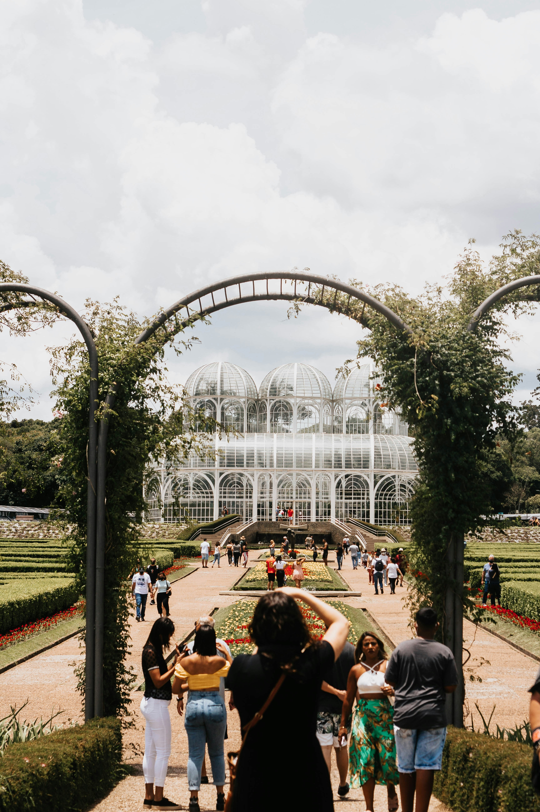
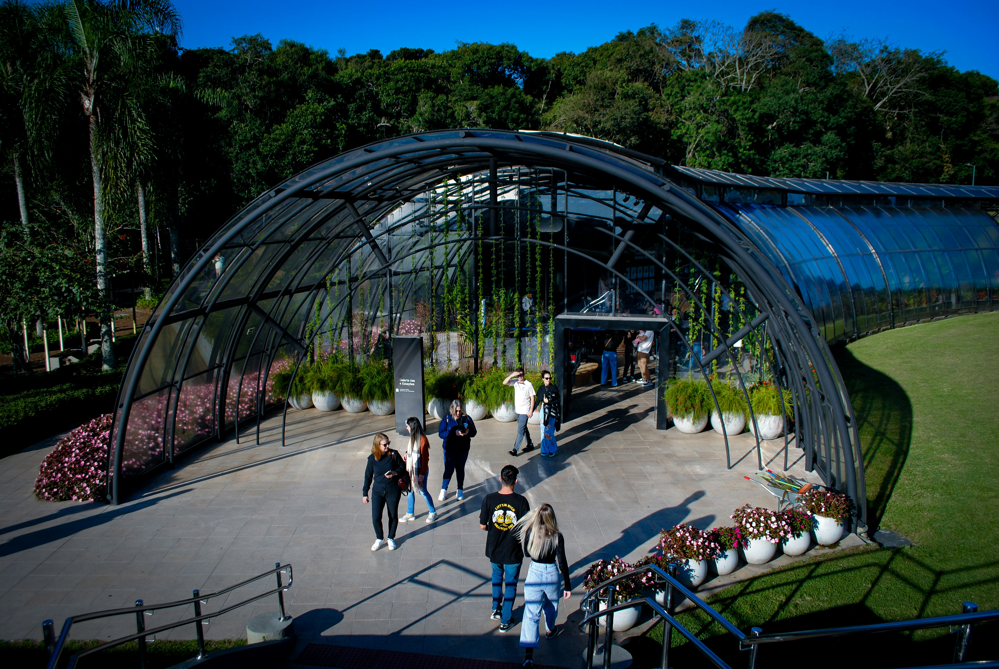
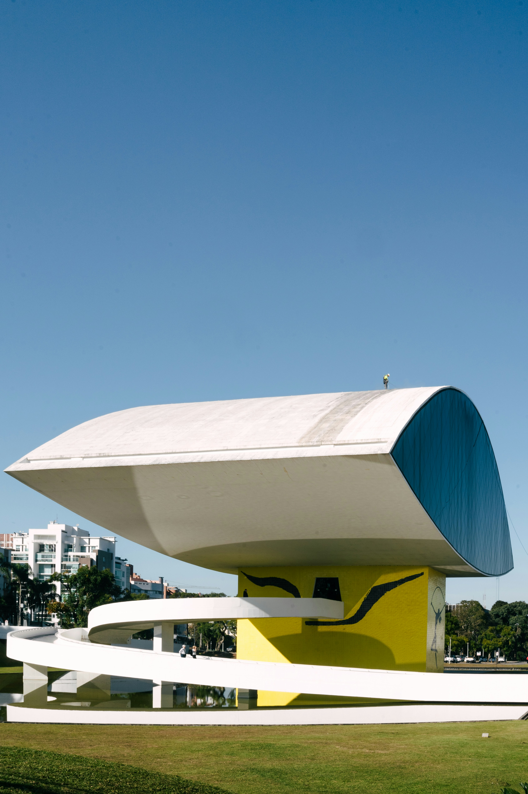

Sobre o tema
Vamos conhecer os pontos turíticos que mais chamam a atenção de visitantes na cidade de Curitiba.

Contexto histórico
O Jardim Botânico, a Ópera de Arame e o Museu Oscar Niemeyer (MON) desenvolveram-se em Curitiba, capital do Paraná, entre 1978 e 2002. Cada um nasceu de projetos urbanísticos ou requalificações de áreas degradadas liderados por prefeitos e arquitetos marcantes, transformando-se em grandes ícones turísticos e culturais do estado.

Importancia cultural
São os maiores ícones culturais e turísticos de Curitiba e do Paraná. Eles representam a identidade da capital unindo inovação urbana, preservação ambiental, arquitetura de vanguarda e o acesso democrático à arte e à natureza. Eles unem inovação urbana, respeito à natureza e valorização da arte. Esses locais transformam cartões-postais em símbolos de pertencimento e memória para a população local e os visitantes.

Curiosidades
Curiosidade 1
Vocẽ sabia que existe uma linha turística que te leva a todos os pontos turísticos de Curitiba?
Curiosidade 2
Também conhecida como cidade verde, a capital paranaense recebe esse nome por conta de seus parques e bosques.
Interaja com o site
clique no botão acima.